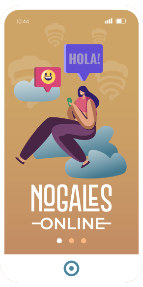

El internet gratuito del gobierno ofrece acceso a la educación, servicios de salud y oportunidades económicas. Fomenta la inclusión digital y fortalece la conexión de la comunidad, promoviendo un desarrollo más equitativo.
El Wi-Fi gratuito permite a todos los ciudadanos acceder a información en línea, facilitando la educación, el trabajo y el entretenimiento, sin importar su situación económica.
Gracias al WiFi público, los estudiantes de todos los niveles pueden investigar, acceder a plataformas educativas y recursos de aprendizaje en cualquier momento, reduciendo las barreras al conocimiento.
El WiFi gratuito ayuda a que pequeños negocios tengan más visibilidad en línea. Los visitantes pueden buscar información y recomendaciones en tiempo real, lo que impulsa el comercio local.
El Wi-Fi gratuito ayuda a conectar a quienes no cuentan con servicio de internet en casa, promoviendo la inclusión digital y social.
Acceda fácilmente a servicios gubernamentales y realice trámites en línea, agilizando procesos y reduciendo la necesidad de traslados.
Al ofrecer Wi-Fi gratuito en plazas y espacios públicos, se fomenta la convivencia y el acceso a información relevante, mejorando la calidad de vida urbana.
Para conectarse a la red de Nogales ONLINE sigue los siguientes pasos:
En tu dispositivo móvil, abre la aplicación de "Configuración" o "Ajustes" para acceder a las opciones del sistema.
Busca y selecciona la opción "WiFi" en el menú de configuración de tu dispositivo móvil para ver las redes disponibles.
Localiza la red "NogalesOnline" en la lista de redes y tócala para iniciar la conexión.

Si estás en Plazas o parques públicos, inicia sesión en Facebook o completa el formulario con tus datos. En Oficinas de Gobierno, ingresa la contraseña: 4T#humanismoMX
Una página de bienvenida debería abrirse en tu navegador automáticamente. Esto indica que ya estás conectado.
Una vez cargada la página de bienvenida, ya puedes navegar en la red NogalesOnline.
Descubre los puntos de acceso WiFi gratuitos en Nogales. Conéctate en espacios públicos y disfruta de internet sin costo. Consulta nuestro mapa para encontrar la ubicación más cercana y mantente conectado donde quieras.
Bienvenido a las Preguntas Frecuentes sobre el Internet Gratuito en Nogales, Sonora. Aquí respondemos las dudas más comunes sobre este servicio público y sus beneficios.
Para tener acceso al servicio de WiFi solo se tiene que identificar la red con nombre “NogalesOnline” en cualquier dispositivo electrónico que permita la conexión a redes WiFi, conectarse y poner la contraseña “4T#humanismoMX” para navegar.
El servicio de WiFi se puede utilizar para cualquier actividad en Internet: navegar en páginas web, enviar mensajes a través de aplicaciones como Whatsapp, entrar a redes sociales, tomar clases en línea, realizar trámites en los portales digitales de la Ciudad, consultar el correo electrónico, entre otras. El servicio no tiene restricciones de contenido (con excepción de las denominadas “listas negras”) del proveedor del servicio.
El servicio de internet tiene una capacidad de 50 Mbps a 100 Mbps por punto de acceso, con una tasa de transferencia de datos de 5 Mbps de descarga y 3 Mbps de carga o de 3 Mbps de descarga y 1 Mbps de carga por usuario. El servicio alcanza a cubrir un radio aproximado de 20 metros (sin obstrucciones) y puede conectar aproximadamente hasta 40 usuarios simultáneos por punto de acceso.
El servicio de WiFi se puede utilizar para cualquier actividad en Internet: navegar en páginas web, enviar mensajes a través de aplicaciones como Whatsapp, entrar a redes sociales, tomar clases en línea, realizar trámites en los portales digitales de la Ciudad, consultar el correo electrónico, entre otras. El servicio no tiene restricciones de contenido (con excepción de las denominadas “listas negras”) del proveedor del servicio.
Sí, en ningún momento el Gobierno Municipal de Nogales solicita dato personal alguno, u otro tipo de autenticación de identidad para poder hacer uso del servicio de WiFi. Así como ningún dato queda en posesión del Gobierno Municipal de Nogales.
Contáctanos hoy mismo y descubre cómo acceder a esta valiosa herramienta que conecta a nuestra comunidad. ¡Juntos, construimos un Nogales más conectado!